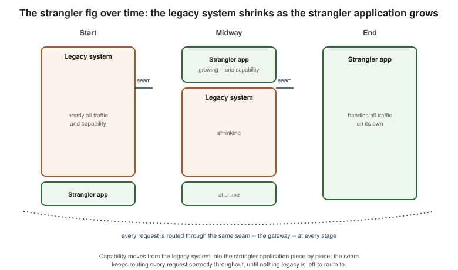

Migration Overview: How to Approach Any Migration
|
This content was generated with the assistance of AI and should be verified against the official documentation before being relied on in production. |
Every migration path in this section — legacy stack to modern stack, monolith to modular monolith, monolith to microservices, and single-tenant to multi-tenant SaaS — shares the same underlying discipline. This page covers that shared discipline once, so the four path-specific pages can focus on what is actually different between them instead of repeating it.
The migration balancing act
Every migration decision sits at the intersection of two different kinds of pressure (Golding, ch. 13, "The Migration Balancing Act"):
-
Business motivators — competitive pressure, the operational cost of running the current system, the need to enter a new market, or customers directly asking for capabilities the current architecture cannot deliver.
-
Technical desires — erasing accumulated technical debt, adopting a newer language or framework, or simply the engineering team’s appetite for a cleaner design.
A migration chosen purely for the second reason, in a technical vacuum, tends to lose executive support the moment it stops looking urgent to the business. The strategy — what to migrate, in what order, and how fast — has to be driven by the business motivators; the technical desires ride along on whatever budget and priority the business case earns, not the other way around.
Timing: modernize first, or deliver and modernize incrementally
Two timing strategies compete for every migration (Golding, "Timing Considerations"):
-
Modernize first. Pause new feature delivery, rebuild the target architecture, then resume delivering features on the new foundation.
-
Deliver now, modernize incrementally. Keep shipping features on the legacy system while migrating it underneath, a slice at a time, using the techniques the path-specific pages describe.
In practice, "modernize first" rarely survives contact with the business: customers and the market do not pause while an architecture is rebuilt, and early feedback from whatever ships first usually reveals that the target design needs to change anyway. That feedback loop is what tips the balance toward incremental modernization for almost every real migration — not because it is architecturally purer, but because it is the only strategy that keeps learning from real usage throughout the migration instead of only at the end.
The fish model
The fish model Golding borrows from Lah and Wood’s Technology-as-a-Service Playbook ("What Kind of Fish Are You?") names the cost-and-revenue shape a migration produces over time: costs rise as the team invests in the new architecture while still operating the old one, then fall once the legacy system is retired; revenue often dips first — feature delivery slows while effort goes into the migration — before spiking once the new architecture unlocks capabilities the old one could not deliver.
The first line is cost — rising while the legacy system and the new architecture both run at once, then falling after cutover. The second line is revenue — dipping while delivery capacity goes into the migration, then spiking once the new architecture starts paying off. Naming which shape a given migration is likely to produce is part of building the business case for it.
No big bang rewrite
However the timing question is answered, one choice is off the table: rewriting the whole system from scratch and cutting over in one release. As Richardson attributes to Martin Fowler, "the only thing a Big Bang rewrite guarantees is a Big Bang" (Richardson, ch. 13.1.2) — a single, high-risk cutover with months or years of accumulated divergence between the old and new systems, tested only at the very end, with no way to walk any part of it back independently.
The alternative every migration path in this section follows instead is the strangler fig, Martin Fowler’s
StranglerFigApplication: named for the strangler fig tree, which grows around a host tree, gradually replacing
it, until the host can eventually be removed while the strangler continues standing on its own. Applied to
software, new functionality is built around the edges of the legacy system, one capability at a time, routed to
through the same seam — typically the gateway --, until the legacy system has been reduced to nothing worth
keeping.

Principles that hold across every path
A handful of principles recur, independent of which specific migration path applies:
-
Demonstrate value early and often. Ship the first slice of the migration — one extracted capability, one modernized module — as soon as it is usable, rather than waiting for the whole migration to finish before anyone outside the team sees a result. Early wins are what keep the business case, and the team’s own morale, intact through a migration that may run for months.
-
Minimize changes to the legacy system. Every line changed in the system being migrated away from is a line that has to be tested, deployed, and risked on infrastructure that is on its way out. Prefer routing around the legacy system, or wrapping it, over modifying its internals — each path-specific page names the least-invasive technique available for its situation.
-
Don’t build the deployment infrastructure up front. It is tempting to spend the first weeks of a migration building out the full target platform — Kubernetes clusters, service meshes, the works — before migrating anything. Richardson’s guidance is narrower: the one piece of infrastructure a migration genuinely cannot live without is an automated deployment pipeline with automated tests (Richardson, ch. 13.1.2); everything else can be added incrementally, when a specific migrated slice actually needs it.
-
Define a time-boxed target architecture. Spend on the order of a couple of weeks sketching where the migration is heading — which capabilities become which services or modules, which technology stack replaces which — and treat that sketch as a destination to aim for and revise as the migration teaches the team more, not as a spec to freeze and follow blindly.
Five pitfalls every path warns about
Each path-specific page below calls out how its situation avoids these five pitfalls concretely; named once here, they are the same five failure modes underlying every one of them:
| Pitfall | Why it derails a migration |
|---|---|
Big bang |
Replaces incremental, revertible progress with one high-risk cutover, tested only at the very end. |
Distributed monolith |
Splitting deployables without splitting their data or their release coupling produces all the operational cost of microservices with none of the independent-deployability benefit. |
Shared database |
Two services sharing one schema recreate the tight coupling a migration is meant to remove, just across a network call instead of a method call. |
Premature infrastructure investment |
Building the full target platform before any capability actually needs it burns budget and time the business case was not sized for, and often gets the platform wrong before real usage informs it. |
Forgetting the organization and process side |
A migration changes what teams own and how they release; treating it as a purely technical exercise leaves that organizational change unaddressed. This section covers the technical side of migration only — team topology and process transformation are out of scope here. |
Where are you? Which page to read next
| Your situation | Read next |
|---|---|
A monolith on a legacy technology stack (Java EE/Struts, .NET Framework Web Forms, a stored-procedure-heavy database) |
|
A healthy monolith on a modern stack that has outgrown a single codebase, or one already partly organized into a modular monolith |
|
A modular monolith (or a monolith ready to skip straight there) that needs some capabilities extracted into independently deployable services |
|
A single-tenant product moving to serve multiple tenants from shared infrastructure |